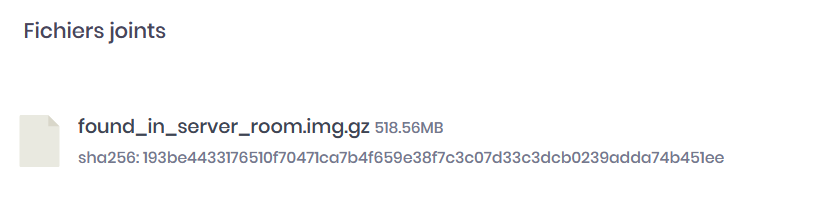
This challenge asks us to analyze the .img file and to find the flag. A system has been found in the server room and we have very few information about it. We have extracted the .img file to understand what is the use of that system.
Using Linux, several commands can be used to analyze an .img file (mount, losetup, kpartx and loop).
Parted command can display the details of the partitions inside of a disk image file. Sometimes the unit might be in blocks, sometimes it might be in sectors depending on if there is a "s" or a "b" after the number. For your information, 1 sector = 512 blocks
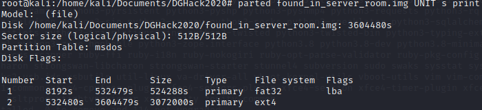
In case if you have the error: "Error: Can't have a partition outside the disk !", you can expand the image by 512 bytes sector:
dd if=/dev/zero bs=512 count=1 >> found_in_server_room.img
According to the size of each partition, we believe that the second partition is the data partition. Since the unit is in sector, let's convert it in blocks first:
Start: 8192 * 512 = 4 194 304 blocks
Before mounting on the system, let's find which loop device is not used on the system: losetup -f
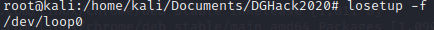
Let's associate the image file to the available loop device: losetup /dev/loop0 found_in_server_room.img -o 4194304
To confirm that the loop device is correctly associated, we can run the command: losetup -a
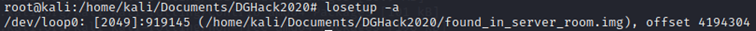
Once it is associated, we can mount the loop device in a mount point and access to the data and filesystem. First let's create a folder for the mount point mkdir /mnt/disk, then we mount the loop device in that folder mount /dev/loop0 /mnt/disk. We can check with a "ls" command to see if we have some files in that folder. If it is not empty, it should be alright.
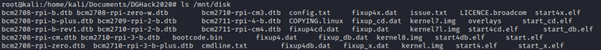
Let's mount the second partition as well, and then we are ready to investigate.
There exists a tool to investigate on the disk called “Autopsy” and can be found in the Sleuth Kit. On this tool, you select the image file and there doesn't need to mount and do all the complicated stuff.
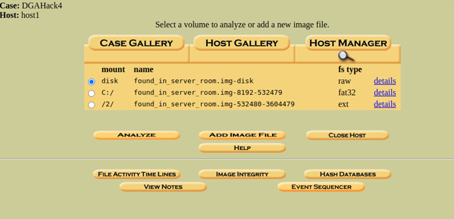
The tool also detected 2 partitions on the disk, and by clicking on "Analyze", we will start the investigation.
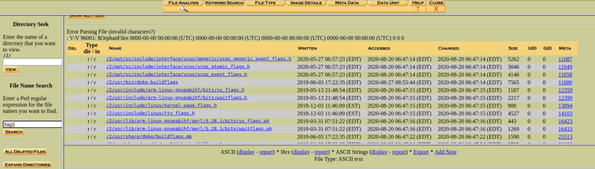
For example, in this tool, we can look for any file name containing the word "flag". Depending on your preference, console or GUI are both possible to investigate. For this challenge I'll show how to investigate on the console side.
Before investigating, it is necessary to know and understand the Linux file system structure.
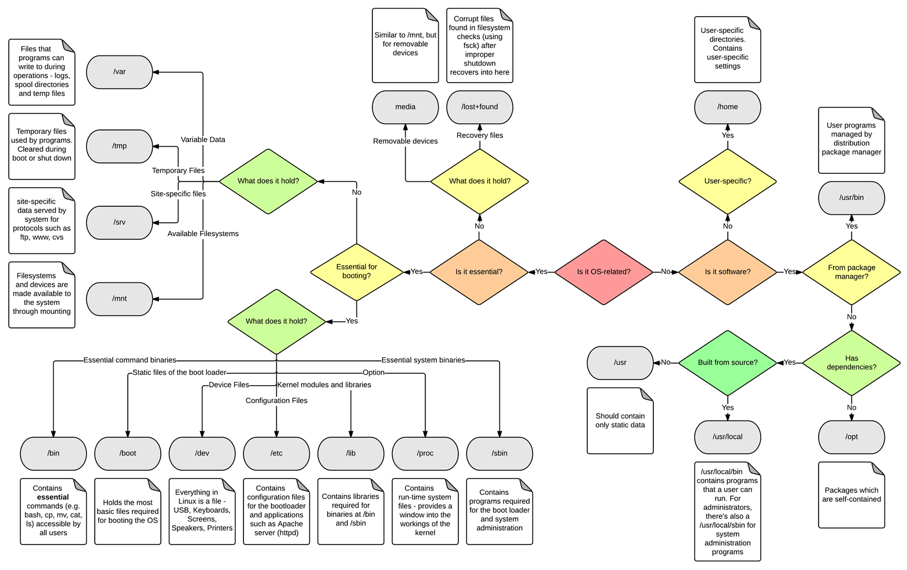
If we want to see what user accounts are presents in the system, we can check the file /etc/passwd. This file stores essential information that are required during login. It contains a list of the system's account, giving for each account some information like user ID, group ID, home directory, shell...
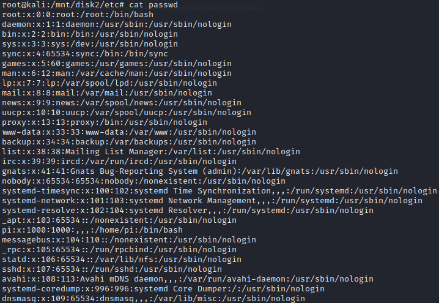
Most of the accounts have /usr/sbin/nologin, which means that we cannot log in with those accounts. So, only the account root, pi and sync can be used on this system.
Checking the command history of each user will be a good starting point. Let's begin with the pi account. By default, Linux user directory are found in "/home/username".
cd /home/pi
ls -la to also display the hidden file.
cat .bash_history, .bash_history is the file storing the commands used by the user.
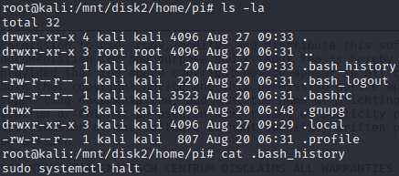
The content of the file is almost empty, only the command "sudo systemctl halt" is present. The command "halt" is used to turn off the system, so nothing suspicious is found on that file.
Let's check for the "root" user. The root user is the administrator, most of the administrative tasks have to be done with privileged user account. We might find some interesting commands there. For the root account, the directory is located in /root.
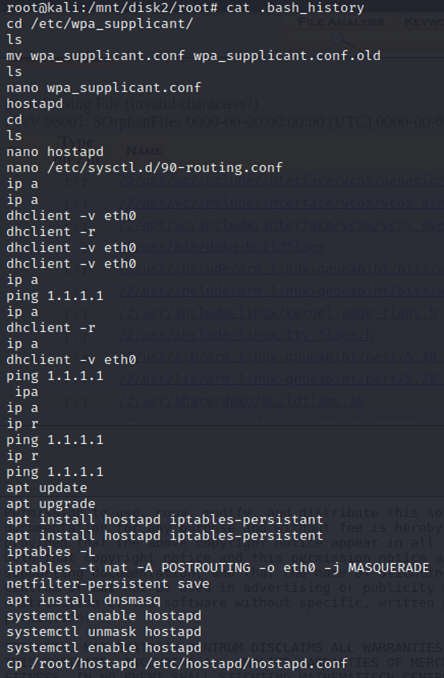
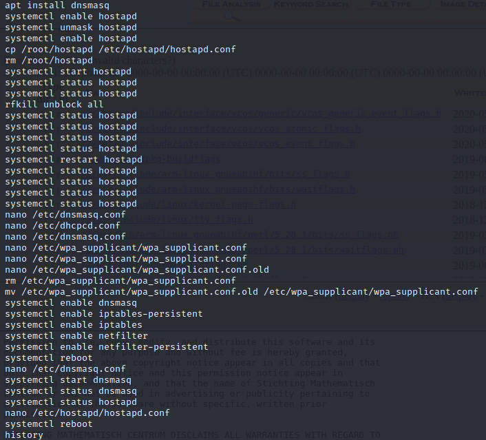
First line we see that root has modified some config file. The file is located in “/etc/wpa_supplicant/wpa_supplicant.conf”.
We have a lot of hostapd, which is used most of the time as a wireless access point. Obviously with hostapd, you need to configure dnsmasq so that you can provide network management services such as DNS and DHCP. Then we also see some iptables and netfilte which is normally used to control the network traffic like a firewall.
Something doesn't seem normal to me with wpa_supplicant.conf since the user “root” rename it to “wpa_supplicant.conf.old”, then create a new one with nano, then edit twice and edit the old one, then remove “wpa_supplicant.conf” and finally rename the old one as "wpa_supplicant.conf".
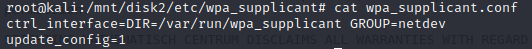
However, nothing is found on the .conf file.
Before that the system is rebooting, the user "root" has modified a file named "hostapd.conf". Since that we have a lot of "systemctl ... hostapd", we should check that configuration file.
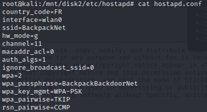
And we found the flag ! The flag is the wifi password : BackpackBackdoorNet